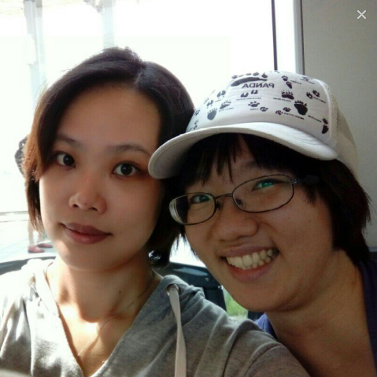

12:36
今天我去重考了這張「Microsoft Azure Administrator」證照。
還記得上次考的時候，我花了一整個月所有的時間，上班的日子唸書2個鐘頭、不用上班的日子唸書12個鐘頭（至少），還自費買了考古題，分享給我覺得一定不可能有我那麼認真準備的同事們，結果大家都考過了，只有我沒過。我哭了好幾次。
老闆還在同事面前（不是每個同事都有去考，我們課只有我跟另一位同事有去考）問我有沒有考過，當我搖頭的時候，眼淚也差點掉下來。
前天在準備的時候，看著考古題，發現幾乎沒有一題我能答對的時候，我又再次崩潰，哭著跟志偉說覺得自己好沒用。
志偉一直安慰我，並建議我直接把考古題背起來，不要再花時間了解。
剛好星期五又放了颱風假，讓我有一整天的時間背考古題，我就像背唐詩一樣，總共有300題考古題。我先分20題、20題去背，背到100題後，再從第一題開始複習。
今天考試的時候，那考試的電腦還出了問題，我有點快要對那試場人員發飆了，但後來有解決了。
這次的經驗讓我更看清自己，還有許多不足，面對挫折，我幾乎沒有能力抵抗，只會哭。我希望自己能越來越堅強。
也想提醒京暘，背考古題的重要性！

這真的是很不簡單，尤其是準備了那麼多，結果只有自己沒過，那感覺真的會很差!!
不過，所幸老天還是有看到你的認真，恭喜啦!!
姊姊辛苦啦～也謝謝你的提醒
我自己覺得如果是自己有興趣的事情、即使辛苦或失敗，也甘之如飴～並不想被綁住了自由，cuz i'm just being me~人生苦短、每天都認真踏實就夠了
美燕 太強了！這個考試最值得的經驗是愈挫愈勇
猴妹仔媽媽很高興你從中也學到堅強
也要感謝志偉一路護衛你克服所有的挫折
而京暘一直讓媽媽佩服的是完全不畏艱苦的長期奮鬥力
看到孩子們的成長是為人父母
最大的欣慰
恭喜彥婷通過了這一場刻骨銘心的考試！
最令人感動的有三：
- 彥婷決不服輸的毅力，以及堅強的戰鬥意志。
- 彥婷自在、善良、無私地和應考的同事分享考古題。
- 志偉以堅強的毅力，以及無比的愛心鼓勵彥婷，守護彥婷。
爸爸有兩點建議：
- 以自省的工夫，培養獨立自在的胸懷。
不要太在乎別人、主管或同事的眼光與評價。
最重要的是，確認自己是否日日盡忠職守、日日力爭上游、日日勇猛精進。 - 生命是用來經歷的，是用來發揮潛力的，是用來發光發熱照亮別人的。
有此體悟，生命中就沒有失敗或成功這回事。
願以這兩個建議和我所摯愛的美燕，以及三個孩子，相互鼓勵。
爸爸
2019.8.10.